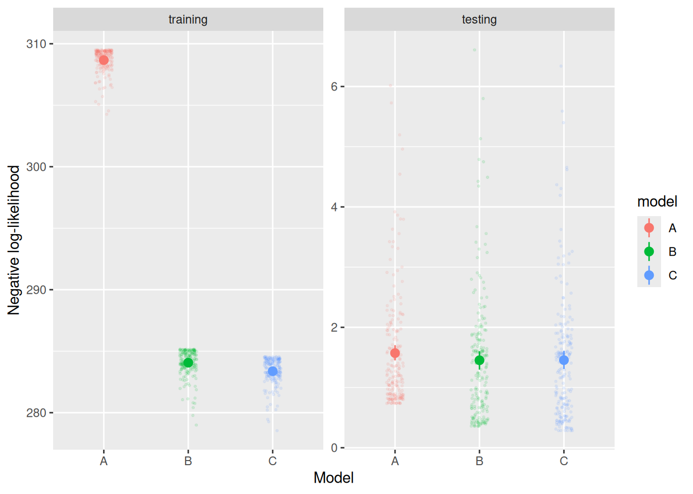

In the previous chapter, we were introduced to the idea of using different “information criteria” to compare models with different numbers of parameters. The idea behind these criteria was to provide a quantitative “score” that rewards a model for fitting data but penalizes it for complexity, so as to identify which of a set of models achieved the best balance between complexity and fit. In this chapter, we delve more deeply into some of the methods by which we compare different models, focusing on just a handful of these methods for our purposes. That said, all model comparison approaches share the goal of balancing quality of fit against complexity, inviting us to consider more broadly the different reasons we might compare models and why we (sometimes) prefer simpler models over more complex ones.
6.1 Complexity and generalization
In a way, the issue with model complexity boils down to the same issue we have in statistics when using a sample to estimate some population quantity. In statistics, where we use models on the “descriptive” end of the modeling continuum, our goal is to identify patterns in our sample of data that we would expect to see in other samples from some broader population. In that way, we generalize whatever conclusions we draw about our sample to this broader population. We have essentially the same goal when applying a cognitive model, even though it falls on the “causal” end of the modeling continuum: By fitting the model to a sample of data, we are hoping to draw some inferences about how a sample of participants accomplished a particular task. We hope that those inferences apply more broadly, i.e., that we can make a general statement about how some broader population accomplishes that task.
The challenge we face in both statistics and cognitive modeling is that we know that not every sample from the same population is identical. This sampling variability has two consequences: First, it is possible that our observed data sample is biased, in the sense that it has some idiosyncratic property that is not representative of what we would expect to see in the population more broadly. In that case, what we conclude about our sample may not generalize to the broader population. Second, even if our sample were unbiased, variability in the population means that we cannot expect our conclusions to generalize equally well to every member of the population—all we can hope is that our conclusions apply on average.
Addressing the consequences of sampling variability is challenging because, by definition, we do not know how variable the population is nor whether our sample is biased or not. In statistics, we address this lack of omniscience by constructing a descriptive model which enables us to estimate how wrong we might be. This is the meaning behind the “standard error” in traditional statistics or the posterior distribution in Bayesian statistics. In the end, we confine ourselves to conclusions that are supported by estimates that are strong enough to overcome this baseline level of wrongness, in which case we call our results “significant” or “credible”. Of course, this does not completely inoculate us from drawing improper generalizations, but it helps us pay attention to data patterns that are more likely to generalize while still acknowledging our uncertainty.
Our techniques for comparing computational cognitive models serve the same function as a “standard error” or posterior distribution in descriptive statistical modeling. A good model fit may be due to idiosyncracies of the model or of the sample, neither of which may be representative of the broader population to which we are hoping to generalize. Because a more complex model has more flexibility to fit any possible sample, we want to avoid favoring a complex model unless it fits better over and above the degree to which we would expect it to fit better just due to its flexibility. As in statistics, model comparison is not guaranteed to identify the “true” model that explains performance on some task more generally. However, model comparison is a valuable tool that helps us identify the aspects of a model that are most essential for explaining performance and which are most likely to generalize.
6.2 Cross-validation
The motivation behind many issues in model comparison is exemplified by the approach known as cross-validation(Arlot & Celisse, 2010; Browne, 2000; Zucchini, 2000). In cross-validation, one divides the sample of data into two parts, a training set and a testing set. The model is fit to the data in the training set and we then compute the log-likelihood of the data in the testing set, using the parameter values obtained by fitting the model to the training set. A model is preferred to the extent that is able to assign higher likelihood to the data in the training set. The rationale behind cross-validation is, thus, to evaluate a model on its ability to generalize from the training data to the test data. A model that is too flexible will tend to “over-fit” the various idiosyncratic features of the training data that are not reproduced in the testing data, meaning it will perform worse on average than a model that captures the systematic aspects that are common to both the training and testing data.
6.2.1 Example
To make this situation concrete, let’s use a diffusion model to simulate some data and then use cross-validation to compare different potential models we could use to fit that data. Let’s again assume we are doing a recognition memory task, where target items have positive drift rates and foil items have negative drift rates. We will also assume that there is trial-by-trial variability in drift rates (the sv parameter) and that it is the same for both targets and foils.
Code
n_trials <-100target_trials <-sampWiener(N = n_trials, a =2, v =0.5, w =0.5, t0 =0.2, sv =0.3)foil_trials <-sampWiener(N = n_trials, a =2, v =-0.5, w =0.5, t0 =0.2, sv =0.3)(all_trials <-tibble(rt =c(target_trials$q, foil_trials$q),response =factor(c(target_trials$response, foil_trials$response), levels =c("lower", "upper")),item =factor(rep(c("Target", "Foil"), each = n_trials), levels =c("Target", "Foil"))))
If we were coming to this data “fresh”, like we would in a real experiment, we might consider applying a few models, since we wouldn’t know which one best accounts for our data. For the sake of the present example, let’s focus on three possible models:
Model A assumes that both the mean drift rate (v) and the drift rate standard deviation (sv) are the same for both targets and foils. This model is “incorrect”, in the sense that it assumes equal parameters for both targets and foils. Nonetheless, we may want to verify that participants are actually able to distinguish between targets and foils. In a different experiment, we might be interested in comparing two conditions to see whether drift rate differs between them. In any case, we can think of model A as a sort of “null” model.
Model B assumes that the mean drift rate (v) varies between targets and foils, but the drift rate standard deviation (sv) is the same for both targets and foils. This model is “correct”, in the sense that it allows parameters to vary in the same way that they did in our simulations.
Model C assumes that both the mean drift rate (v) and drift rate standard deviation (sv) vary between targets and foils. This model is “incorrect”, in the sense that it is too flexible relative to how the parameters varied in simulation. Nonetheless, we expect that this model will probably fit better than the “correct” model (B) since the additional drift rate variability parameter will enable it to fit any quirks in the simulated data.
6.2.1.1 The steps of cross-validation
To see how cross-validation works, let’s go through a single example of applying it to our simulated data. First, we need to split our data into “training” and “testing” sets. We will do this randomly, so as not to introduce any bias. Relatedly, we will need to make sure that all the conditions of the experiment are represented in both testing and training sets in the same proportion that they are in the full data. Again, this avoids introducing bias by not “over-representing” one condition or the other.
For our first pass, let’s have the training and testing data be of equal size. We will use R’s sample function to randomly assign each trial within each condition (defined by item) to either the training or testing set.
Code
all_trials_traintest <- all_trials %>%group_by(item) %>%mutate(set =factor(# In the line below, `n()` is the number of trials within the groups defined by the variables in the `group_by` line abovesample(rep(c("training", "testing"), round(c(0.5, 0.5) *n())))[1:n()],levels =c("training", "testing") ) )
You may already have noticed something important about cross-validation: Because we have to divide the data up at random, it can give different results each time you do it! We will return to this issue.
For now, though, once we have divided up our data, we need to fit each model to only the training data. This looks just like it did in the previous chapter, where we are using fit_wienr to find parameter estimates for each model.
As expected, model A had the highest negative log-likelihood (i.e., the worst fit), followed by model B, with model C only doing barely better than model B. The estimated parameters for the “correct” model (B) are pretty close to those we used to simulate the data. Meanwhile, the estimated parameters for models A and C also tend to correspond pretty well with those used to generate the data (for example, the boundary separation a, response bias w, and residual time t0 for those models are all pretty close to the values we used in simulation).
But the real question is how well each model does with the testing data. To do that, we need to compute the negative log-likelihood of the data using the parameters estimated above. We can do that by passing the par element of the fits above as the init_par argument to the fit_wienr function and setting the return_nll argument to TRUE.
Based on these results, model A is the worst of the three, as we might have expected. But when evaluated on the testing data, model B actually fares slightly better than model C, despite the fact that model C achieved a better negative log-likelihood on the training data. This is an example of cross-validation working as intended—it has identified that model C is too flexible in this context. Model C “overfit” the training data to such an extent that it did not generalize as well to the testing data as model B.
6.2.1.2 Repeating cross-validation
As noted above, though, we would get different results from cross-validation if we split the data into training/testing sets differently. To get a sense of which models are consistently able to generalize better, we need to replicate the cross-validation procedure several times, each with a different training/test split. In the code below, I use a for loop to do this. In the cv_results tibble, I keep track of the negative log-likelihood that each model achieves on both the training and testing data, so I can plot those at the end.
Small, light points show each individual cross-validation run, the large points show the mean and bootstrapped 95% confidence interval across runs.
Notice that model C does, on average, achieve a slightly better NLL than model B on the training data. Specifically, the average NLL for model B on the training data is 141.9735778 and for model C is 141.4932351. However, model B achieves a slightly better NLL than model C on the testing data (146.5512123 for model B, 146.6566674 for model C). These differences are not particularly large, of course, but they show the basic idea behind cross-validation as an approach to model comparison.
6.2.2\(K\)-fold cross-validation
In the example above, the testing and training sets were the same size. This is not terribly efficient. Because the models are only being fit to half the data, there is more variability/uncertainty in the estimated parameters than there would be if they were fit to the entire dataset. As such, in most applications of cross-validation, the training set is larger than the testing set.
These applications are often referred to as “\(K\)-fold cross-validation” because they involve splitting the data into \(K\) evenly-sized sets and then performing cross-validation \(K\) times. Each time, a different one of the \(K\) sets is treated as the “testing” data, with the remaining \(K - 1\) sets used for training. A common choice for \(K\) is 10, such that the proportion of data “left out” for testing is 0.1, not 0.5.
Let’s see how we would implement \(K\)-fold cross-validation in our running example. The first step is to split the data into \(K\) equal sets. The code below shows one way to do this using the sample function like we did in the example above. Notice that we use the rep function to repeat each index ceiling(n() / K) times. The ceiling function rounds any fractional amounts up, so we will always have at least as many indexes to sample from as we have trials. The [1:n()] truncates the vector of repeated indices so that it has exactly n() elements.
Code
K <-10all_trials_split <- all_trials %>%group_by(item) %>%mutate(set =sample(rep(1:K, ceiling(n() / K))[1:n()]))
The result looks like this, although it is worth keeping in mind that different runs will produce different splits since they are done randomly.
The result looks pretty similar to what we had previously, in that model C fits slightly better than model B on the training data, but they fare about equally well on the testing data.
6.2.3 Leave-one-out cross-validation
As a reminder, each time we run \(K\)-fold cross-validation, we will get a slightly different result because of the random way in which we split the data. Moreover, using \(K\)-fold CV was motivated by an attempt to make efficient use of the data at hand, so as not to artificially inflate our uncertainty about estimated model parameters. If we take these two issues—randomness and efficiency—seriously, then the best way to do cross-validation would actually be to have as many “folds” as we have observations. In other words, we fit each model to all but one observation and then test them on the one that we left out and repeat this process for all \(N\) observations in our dataset. That solves the efficiency problem, since the models are able to train on essentially all of the data. It also solves the randomness problem because instead of doing CV with random subsets, we do it exhaustively, once for each observation. This approach is, prosaically, referred to as Leave-One-Out Cross-Validation (LOOCV).
We said LOOCV resolves the “efficiency” issue with cross-validation, but only in the sense that the models are able to make use of nearly all the data. LOOCV is certainly not efficient in terms of computing time, since it requires fitting each model \(N\) times, once for each left-out observation. We typically apply computational cognitive models to data from experiments where we have a few hundred trials per participant (and we would need to replicate LOOCV for each participant too). Moreover, as we’ve seen, estimating best-fitting parameters even for a relatively simple cognitive model like a diffusion model is not trivial. Therefore, LOOCV is almost never used in practice.
For fun, though, let’s try it with our running example, where the code below adapts the \(K\)-fold CV code we used in the previous section. Note the use of the “negative indexing” trick to exclude each observation i from the training data in the for loop.
Code
loocv_results <-c()for (i in1:nrow(all_trials)) {# Fit each model to the training data fit_a <-with( all_trials[-i,],fit_wienr(rt = rt, response = response, fit_sv =TRUE) ) fit_b <-with( all_trials[-i,],fit_wienr(rt = rt, response = response, drift_index =as.numeric(item), fit_sv =TRUE) ) fit_c <-with( all_trials[-i,],fit_wienr(rt = rt, response = response, drift_index =as.numeric(item), sv_index =as.numeric(item), fit_sv =TRUE) )# Evaluate each model on the testing data test_nll_a <-with( all_trials[i,],fit_wienr(rt = rt, response = response, init_par = fit_a$par, fit_sv =TRUE, return_nll =TRUE) ) test_nll_b <-with( all_trials[i,],fit_wienr(rt = rt, response = response, init_par = fit_b$par, drift_index =as.numeric(item), fit_sv =TRUE, return_nll =TRUE) ) test_nll_c <-with( all_trials[i,],fit_wienr(rt = rt, response = response, init_par = fit_c$par, drift_index =as.numeric(item), sv_index =as.numeric(item), fit_sv =TRUE, return_nll =TRUE) )# Save results of current iteration loocv_results <-rbind( loocv_results,tibble(fold = i,set ="training",model =c("A", "B", "C"),nll =c(fit_a$value, fit_b$value, fit_c$value) ),tibble(fold = i,set ="testing",model =c("A", "B", "C"),nll =c(test_nll_a, test_nll_b, test_nll_c) ) )}loocv_results %>%mutate(set =factor(set, levels =c("training", "testing"))) %>%ggplot(aes(x = model, y = nll, color = model)) +geom_point(position =position_jitter(width =0.1), alpha =0.1, size =0.5) +stat_summary(fun.data = mean_cl_boot) +facet_wrap("set", scales ="free_y") +labs(x ="Model", y ="Negative log-likelihood")

Consistent with the other varieties of CV above, LOOCV finds that model A generalizes the worst on average (mean testing NLL = 1.5718645), followed by model C (mean testing NLL = 1.4550586) then closely by model B ((mean testing NLL = 1.453186)). Again, the difference between models B and C is not dramatic, but consider that model C consistently outperforms model B on the training data—the message that we get from LOOCV is that this advantage is due to overfitting, not because model C captures anything systematic beyond that which is captured by model B. Therefore, we should prefer the simpler model B when deciding which model best explains our data.
6.2.4 Summary
Cross-validation is not always the most practical approach to assessing model fit vs. complexity. That said, it shows one reason why we might prefer a simpler model: Such a model is less likely to “overfit” our data and is therefore better able to generalize to new data. This has practical advantages if we are using the model to make predictions about future unseen data. It is also theoretically meaningful because a model that generalizes better is probably one that has mechanisms that are important for producing the systematic features of our data.
6.3 Akaike Information Criterion
The practical issues with cross-validation mean that it is rarely used to compare cognitive models. That said, one of the model comparison approaches we saw in the last chapter, the Akaike Information Criterion (AIC; Akaike (1974)), is in fact an asymptotic approximation to LOOCV. We won’t prove this fact here, but check out Stone (1977). For our purposes, we can simply appreciate that the asymptotic equivalence of AIC and LOOCV is very convenient because it means that we can often reasonably approximate LOOCV while only needing to fit the model once.
Let’s calculate the AIC for each of the three models in our running example. To do this, we will first need to fit each model to the full dataset (no more splitting into testing/training sets). This is done in the chunk of code below.
where \(NLL\) is the negative log-likelihood of the fitted model and \(N_p\) is the number of free parameters in the model. Thus, the code below computes the AIC for each of the three models
Code
2* fit_a$value +2*length(fit_a$par)
[1] 630.4553
Code
2* fit_b$value +2*length(fit_b$par)
[1] 583.0139
Code
2* fit_c$value +2*length(fit_c$par)
[1] 583.6266
Like with cross-validation above, AIC finds that model A is the worst and that model B has a slight advantage over model C.
Returning to LOOCV for a moment, recall that the value we obtained was the mean negative log-likelihood across each of the \(N\) left-out observations. Meanwhile, the \(NLL\) we get from fitting the full model is the summed negative log-likelihood across all \(N\) observations. So if we want to put the results from LOOCV on the same scale as the results we get from AIC, we need to multiply them by \(2N\). I do this in the chunk of code below.
# A tibble: 3 × 2
model rescaled_result
<chr> <dbl>
1 A 629.
2 B 581.
3 C 582.
Although the reader is again referred to Stone (1977) for a formal proof, this example shows that, when appropriately rescaled, AIC and LOOCV give very similar results and will generally lead us to the same conclusions regarding which of a set of models to prefer.
This rough equivalence also shows that AIC ultimately assesses models on their predictive performance, that is, their ability to fit future unseen data generated by the same processes that produced our original data.
6.4 Bayes Factors and Bayesian Information Criterion
In the last chapter, we were introduced to another model comparison metric, the so-called “Bayesian” Information Criterion [BIC; Schwarz (1978)]. The BIC is, under certain very restrictive circumstances, asymptotically equivalent to a Bayes Factor (Raftery, 1995). The relationship between AIC/LOOCV and the Bayes factor/BIC can be summarized like this: AIC/LOOCV assess the ability of a model to fit future data conditional on the data that has already been observed; Bayes factors/BIC assess the ability of a model to fit any data, irrespective of the data that has already been observed. In other words, AIC/LOOCV assess the posterior predictive ability of a model whereas BIC/Bayes Factors assess the prior predictive ability of a model (Gelman et al., 2014; Piironen & Vehtari, 2017; Vehtari & Lampinen, 2002).
It is worth repeating that BIC does not have the same formal relationship to Bayes factors that AIC has to LOOCV, so BIC should not be thought of, outside of very special cases, as equivalent to a Bayes factor. Nonetheless, it has the same underlying motivation, which is to favor models that make more limited predictions a priori. This is why the formula for BIC imposes a stronger penalty for the number of free parameters in a model, because the flexibility afforded by those parameters doesn’t just allow the model to “overfit” the data we observed, it allows it to overfit any data we might have observed.
6.5 Simplicity vs. Complexity
Ultimately, model comparison allows us to answer the question, “what is the simplest model, among those I am considering, that is sufficient to achieve a good quantiative fit to the data in my sample?” By laying out this question explicitly, we are in a position to see three of the important qualifiers on any conclusions we draw based on model comparisons:
Defining “simplicity”: Different model comparison metrics have different operational definitions of “simplicity”. AIC and BIC each define it in terms of the number of free parameters in a model. Cross-validation defines it in terms of how well a model fit to training data can account for test data. A Bayes factor defines it in terms of the prior predictive distribution of a model, etc.
Conditional on the set of models being compared: Although it may be possible to identify a “preferred” model using a model comparison metric, that preference is only with respect to the set of models being compared. It is entirely possible that an additional unconsidered model would be preferred if it were included. It may also be the case that the “preferred” model is only the “least bad” model among those under consideration—that’s why it is always important to verify that a model is actually reproducing the data patterns that you think are most important in your application.
Conditional on the sample: It may be that a different sample would have lead to a different “preferred” model, although as noted above, model comparison metrics are usually designed to account for this form of sampling variability. This qualification is more important when attempting to generalize more broadly, for example, to other kinds of related tasks or to the same task but with different materials.
Often, model comparison is analogized to “Occam’s Razor”, the famous principle that, if many explanations are available, we should prefer the simplest one. The issue with this analogy is that it conflates two ways in which a model can be “simple”: A model can be “simple” according to one of the operational definitions of simplicity/complexity employed by a particular model comparison metric. But a model can also be “simple” in the sense that it is easier for a scientist to understand or to describe to someone else. The first sense of “simplicity” can be quantified (as in the methods reviewed in this chapter), but the second sense of “simplicity” is more to do with the background and expertise of particular scientists, the means by which they communicate, and the broader culture in which they are working. In other words, the second sense of “simplicity” has to do with the fact that a causal model is not meant just to fit data, but also to help people understand why the data turned out that way. As the bumper sticker says, scientists are people too and, being limited creatures, cannot understand everything. This second sense of simplicity should not be dismissed, though: If someone can understand a model more easily, they may also be able to devise predictions, tests, and extensions of the model more easily too.
Because the two senses of “simplicity” are separate, they are not guaranteed to align with one another. There may be cases in which a model that is “simple” in the sense of having few free parameters or a narrow prior predictive distribution may be very difficult to explain or describe. It is also possible that a model that is easier to explain or describe might be more flexible or have more parameters than needed to account for any particular sample of data. The latter situation is likely to occur if a model is designed to account for a wide variety of phenomena—such a model may contain mechanisms (with associated parameters) that are only relevant for certain phenomena.
It is also worth repeating that a simpler model—regardless of the sense of “simplicity”—is not guaranteed to be any more “true” or “correct” than a complex model. The “truth”, whatever that is, is almost certainly more complex than any model we would devise. Rather, given that all models are deliberate simplifications, the virtue of a simpler model is that (a) it is more likely to generalize well because it is less likely that its ability to fit data is due to some idiosyncratic property of the model or the sample; and (b) it is often (but not always) easier to describe and explain.
6.6 Exercises
The discussions of cross-validation and generalization in this chapter focused on situations in which we wanted to “generalize” to data from the same (simulated) participant in the same (simulated) task. How would you adapt cross-validation to assess other kinds of generalization, such as from one participant to another? Or from one task to another? In formulating your thoughts, you may want to read Busemeyer & Wang (2000) and Navarro (2018).
Unlike in cognitive modeling, where cross-validation is rarely used, machine learning models are often compared using cross-validation. Models in machine learning sit on the “descriptive” end of the modeling spectrum. Machine learning models are typically applied to very large datasets and have a lot of free parameters (e.g., each weight in a neural network model is technically a free parameter). Why do you think cross-validation is more common in machine learning than in cognitive modeling?
Given that AIC and BIC judge models according to different criteria, which do you think is better suited for identifying the model the “best explains” a given set of data? What reasons might there be to prefer one approach over the other? Could the term “explain” have different interpretations in different applications?
Arlot, S., & Celisse, A. (2010). A survey of cross-validation procedures for model selection. Statistics Surveys, 4, 40–79. https://doi.org/10.1214/09-SS054
Busemeyer, J. R., & Wang, Y.-M. (2000). Model comparisons and model selections based on generalization criterion methodology. Journal of Mathematical Psychology, 44(1), 171–189. https://doi.org/10.1006/jmps.1999.1282
Gelman, A., Hwang, J., & Vehtari, A. (2014). Understanding predictive information criteria for bayesian models. Statistics and Computing, 24(6), 997–1016. https://doi.org/10.1007/s11222-013-9416-2
Navarro, D. J. (2018). Between the devil and the deep blue sea: Tensions between scientific judgement and statistical model selection. Computational Brain & Behavior. https://doi.org/10.1007/s42113-018-0019-z
Piironen, J., & Vehtari, A. (2017). Comparison of bayesian predictive methods for model selection. Statistics and Computing, 27(3), 711–735. https://doi.org/10.1007/s11222-016-9649-y
Raftery, A. E. (1995). Bayesian model selection in social research. Sociological Methodology, 25, 111–163. https://doi.org/10.2307/271063
Schwarz, G. (1978). Estimating the dimension of a model. The Annals of Statistics, 6(2), 461–464.
Stone, M. (1977). An asymptotic equivalence of choice of model by cross-validation and Akaike’s criterion. Journal of the Royal Statistical Society. Series B (Methodological), 39(1), 44–47.
Vehtari, A., & Lampinen, J. (2002). Bayesian model assessment and comparison using cross-validation predictive densities. Neural Computation, 14(10), 2439–2468. https://doi.org/10.1162/08997660260293292